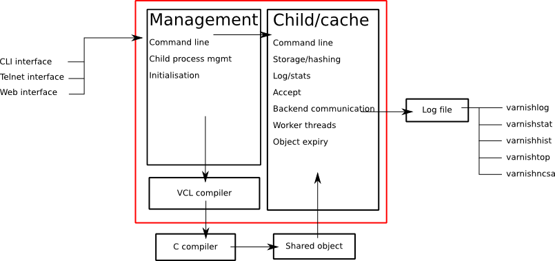
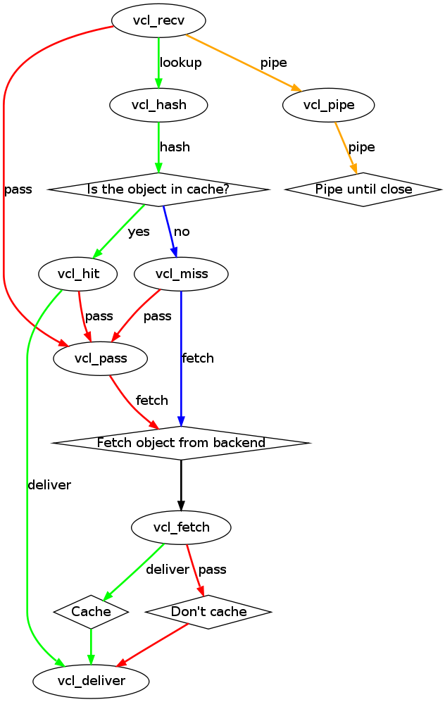

Varnish System Administration
| Author: |
Tollef Fog Heen, Kristian Lyngstøl |
|---|
| Copyright: |
Varnish Software AS 2010, Redpill Linpro AS 2008-2009 |
|---|
| align: | center
:width: 181px |
|---|
1 Introduction
- Goals and prerequisites
- About the course
- Introduction to Varnish
- History
- Varnish 2.0 and Varnish 2.1
1.1 Goals
- Understand how Varnish works
- Be able to set up Varnish from scratch
- Debug cache-related issues
- Avoid pitfalls
1.2 Prerequisites
- GNU/Linux/UNIX skills help, but are not a requirement
- Basic understanding of HTTP and related internet protocols
The course is oriented around a GNU/Linux server-platform, but the
majority of the tasks only require minimal knowledge of GNU/Linux.
The course starts out by installing Varnish and navigating some of the
common configuration files, which is perhaps the most UNIX-centric part
of the course. Do not hesitate to ask for help.
1.3 About the course
The course is essentially split in two:
- Architecture, command line tools, installation, parameters, etc
- The Varnish Configuration Language
The course has roughly 50% exercises and 50% instruction.
We will adjust the agenda based on the progress made. There is usually
ample time to investigate specific aspects of Varnish that may be of
special interest to some of the participants.
The exercises will occasionally offer multiple means to reach the same
goals. Specially when you start working on VCL, you will notice that
there are almost always more than one way to solve a specific problem,
and it isn't necessarily given that the solution offered by the
instructor or this course material is better than what you might come up
with yourself.
Always feel free to interrupt the instructor if something is unclear.
1.4 Introduction to Varnish
- What is Varnish?
- Open Source / Free Software
- History
- Design Principles
Varnish is a reverse proxy, sometimes referred to as a HTTP accelerator.
It is designed for modern hardware, modern operating systems and modern
work loads. This uncompromising philosophy has helped make Varnish a
very clean and fast piece of software, able to scale and evolve to
unexpected heights.
At the same time, Varnish is flexible. The Varnish Configuration
Language is a lighting fast mechanism that allow the developers to
implement mechanisms which you as a user can turn into policy. Varnish
has shown itself to work well both on large (and expensive) servers and
tiny appliances.
Varnish is also a open source project, or free software. The development
process is open, and everyone can submit patches, or just take a peak at
the code if there is some unclarity as to how Varnish works. There is
also a community of volunteers which help each other and new-comers. The
BSD license used by varnish is the most restraint-free license among the
free licenses, which conceptually makes it possible to use Varnish on so
called non-free platforms, for example Solaris.
Varnish is currently developed and tested on GNU/Linux and FreeBSD. The
code-base is kept as self-contained as possible to avoid introducing
out-side bugs and unneeded complexity.
Varnish development is governed by the Varnish Governance Board (VGB),
which thus far has not needed to intervene. The VGB consist of an
architect (Poul-Henning Kamp), a representative from the community
(Artur Bergman) and a representative from Varnish Software (Kristian
Lyngstøl).
1.5 The history of Varnish
- Initiated by VG in 2006.
- Redpill Linpro performed the development.
- Later development has been financed through service subscriptions
- Varnish Software was established in 2010 to service the increasing
commercial interest.
VG, large Norwegian newspaper initiated the Varnish-project in
co-operation with Linpro. The lead developer, Poul-Henning Kamp is an
experienced FreeBSD kernel-hacker and continues to bring his wisdom
to Varnish in most areas where it counts.
From 2006 throughout 2008, most of the development was sponsored by
VG, API, Escenic and Aftenposten, with project-management,
infrastructure and extra man-power provided by Redpill Linpro.
Today Varnish Software is able to fund the core development with
income from service agreements, in addition to offering development
of specific features on a case-by-case basis.
The interest in Varnish continue to increase on an almost daily
basis. An informal study based on the list of most popular web
sites in Norway indicates that about 75% or more of the web traffic
that originates in Norway is served through Varnish.
1.6 Varnish 2.0
- Released in October 2008.
- Edge Side Includes (ESI)
- Load balancing
- Backend health checks
- Grace - Controlled delivery of expired objects until a fresh copy is
available
Varnish implements a subset of the ESI Language 1.0 defined by W3C.
This is based on what was deemed to be necessary at the time.
Backend health checks, load balancing and grace all interact with
each other in Varnish 2.0.5 allowing you to reduce the number of
exposed error messages to almost zero even when your web servers
are struggling heavily.
The load balancing of Varnish allow you to define a number of web
servers that Varnish should balance the traffic between, based on
an algorithm you can specify. When health checks are enabled,
Varnish will only direct traffic to web servers it knows is working
correctly, and you can even tell Varnish to use otherwise expired
content instead of giving an error message when all your web
servers are marked as unhealthy.
1.7 Varnish 2.1
- Version 2.1 was released early in 2010.
- Persistent storage
- Improved purging mechanisms
- Saint mode
Where Varnish 2.0 brought Varnish out of it's childhood, Varnish
2.1 will make Varnish truly mature. Persistent storage will allow
Varnish to keep it's cache - or most of it - when it's restarted.
This will reduce the warm-up time in case of a system upgrade or
crash.
Most of the performance tweaks and the improved purging is already
included in Varnish 2.0.5. With the new mechanism of purging, it is
now possible to purge - or invalidate - objects based on any data
that can be recognized in VCL. The smarter purging allows for more
dynamic and application-oriented purging, instead of having to
adapt your web application to Varnish.
Saint Mode is a way of telling varnish to use an old object instead
of the new version of the object. This allow you to check in VCL if
you think what the web server just gave you is correct. For
instance by checking if it is a "500 Internal Server Error", you
can tell Varnish to not try to get this object again from this
backend, then try again. If none of your backends are able to give
you the desired result, Varnish can then use the old copy instead
of serving an error message.
Most of the performance tweaks that have been made are based on
experiences either from the Varnish community or from customers of
Varnish Software, and not on guess-work. The close co-operation
between developers, users and customers ensures that the
development is driven by the needs of those who use Varnish instead
of having the developers try to guess what you as a user want.
During the development cycle of Varnish, Varnish Software performs
nightly builds and stress tests on the most current development
version on Varnish to ensure that the performance and stability
doesn't decline. In addition to this, the open development model
allows anyone who's interested to grab the latest development
version and try it out.
2 Architecture
- Design principles
- Process architecture
2.1 Design principles
- Optimized for 64-bit - supports 32bit
- Optimized for multi-core/CPU
- Work with the kernel, not against it
- Innovate - not copy/paste
- VCL, shared memory log, bheaps
- Make the fast-path really fast. Delegate.
- Solve real problems.
When Varnish was planned, it was decided early on to focus on
high-performance, flexibility and stability. That meant making some
sacrifices.
Varnish is designed for hardware that you buy today, not the hardware
you bought 15 years ago. Varnish is designed to run on 64-bit
architectures and will scale almost proportional to the number of CPU cores
you have available. Though CPU is rarely a problem.
If you choose to run Varnish on a 32-bit system, you are limited to 2GB
of virtual memory, which puts a limit on the number of threads you can run
and the size of your cache. This is a trade-off to gain a simpler design
and reduce the amount of work Varnish needs to do.
Varnish does not keep track of whether your cache is on disk or in
memory, as the operating system do a far better job at this. Instead,
Varnish will simply request a large chump of memory and leave it to the
operating system to figure out where that memory really is.
Features like accept filters, epoll and kqueue are advanced features of
the operating system that are designed for high-performance services like
Varnish.
In addition, Varnish uses a configuration language that is translated to
C-code, compiled with a normal C compiler and then linked directly into
Varnish at run-time. This has several advantages, like allowing you to use
the optimizations of your C-compiler, and adapting Varnish to your exact
needs even if the developers didn't see your specific use-case.
The shared memory log allow Varnish to log extensive information at
almost no cost by having other applications parse the data and extract the
useful bits. This is important to reduce the lock-contention in a heavily
threaded environment like Varnish. Lock-contention is also one of the
reasons why Varnish uses a workspace-oriented memory-model instead of only
allocating the exact amount of space it needs at run-time.
This all sums up to a few important principles. First of all,
Varnish is designed to run on realistic hardware under real
work-loads and to solve real problems. Varnish do not cater to the
"I want to make varnish run on my 486 just because"-crowd. If it
does work on your 486, then that's fine, but that's not where you
will see our focus. Nor will you see us sacrifice performance or
simplicity for the sake of niche use-cases that can easily be
solved by other means - like using a 64-bit OS.
2.2 Process Architecture
The multi-process architecture:

2.2.1 The management process
Varnish has two main process: the management process and the child process.
The management process has many uses, but usually does very little. It will
compile VCL, communicate with other processes or a system administrator
through the management interface, apply parameter changes, initialize
Varnish and watch.
By default, the management process polls the child process every few
seconds to see if it's still there. If it doesn't get a reply within a
reasonable time, the management process will kill the child and start it
back up again. The same happens if the child unexpectedly exits, for
example from a segmentation fault or assert error.
This ensures that even if Varnish does contain a critical bug, it will
start back up again fast. Usually within a few seconds, depending on the
conditions.
All of this is logged to syslog. This makes it crucially important to
monitor the syslog for just such restarts, because you may never even know
unless you look for them, because the perceived downtime is so short.
2.2.2 The child process
The child process is where the real magic goes on. The child process
consist of several different types of threads, including, but not limited
to:
- Acceptor thread to accept new connections and delegate them
- Worker threads - one per session. It's common to use hundreds of worker
threads.
- Expiry thread, to evict old content from the cache
Varnish uses workspaces to reduce the contention between each thread when
they need to acquire or modify some part of the memory. There are multiple
work spaces, but the most important one is the session workspace, which is
used to deal with manipulation of session data. An example of such a
manipulation would be to change the "www.example.com" to "example.com"
before it is entered into the cache, to reduce the number of duplicates.
It is important to remember that even if you have 5MB of session workspace
and are using 1000 threads, the actual memory usage is not 5GB. The virtual
memory usage will indeed be 5GB, but unless you actually use the memory,
this is not a problem. Your memory controller and operating system will
keep track of what you actually use.
To communicate with the rest of the system, the child process uses a shared
memory log accessible from the file system. This means that if a thread
needs to log something, all it has to do is grab a lock, write to a memory
area and then free the lock. In addition to that, each worker thread has a
cache for log data to avoid overly frequent locking.
The log file is usually about 90MB, and split in two. The first part is
counters, the second part is request data. To view the actual data, a
number of tools exist that parses the shared memory log. Because the
log-data is not meant to be written to disk in its raw form, Varnish can
afford to be very verbose. You then use one of the log-parsing tools to
extract the piece of information you want - either to store it permanently
or to monitor Varnish in real-time.
2.2.3 VCL compilation
Configuring the caching policies of Varnish is done in the Varnish
Configuration Language (VCL). Your VCL is then interpreted by the
management process into to C and then compiled by a normal C compiler -
typically gcc. Lastly, it is linked into the running Varnish instance.
As a result of this, changing configuration while Varnish is running is
very cheap. Varnish may want to keep the old configuration around for a bit
in case it still has references to it, but the policies of the new VCL
takes effect immediately.
Because the compilation is done outside of the child process, there is
virtually no risk of affecting the running Varnish by accidentally loading
an ill-formated VCL.
3 Getting started
rpm -i libvarnish*.rpm
rpm -i varnish*.rpm
dpkg -i libvarnish*.deb
dpkg -i varnish*.deb
A 64 bit environment is recommended for production.
- Setting up a backend
- Downloading the source
- Compiling and installing
You want to use packages for your operating system whenever possible,
but today you can choose for yourself.
If the computer you will be using throughout this course has Varnish
2.0.3 or more recent available through the package system, you are
encouraged to use that package if you do not feel you need the exercise
in installing from source.
We will be using usemod-wiki and apache2 throughout the course (among
other things) as a backend. Usemod-wiki is a simple yet dynamic web
application that is well-suited for testing. While you are welcome to
choose something else, you should wait until the second day of training to
set a real web-application as backend, due to the extra complications that
are usually caused by cookies.
3.1 Exercise: Install backend
- Install "usemod-wiki" and "apache2"
- Verify they work by going to "http://localhost/" and "http://localhost/cgi-bin/wiki.pl"
- If it complains about "Bad page version (or corrupt page).", run "sudo rm -r /var/lib/usemod-wiki/page"
XXX: FIXME: More stuff and "solving" it.
3.2 Exercise: Installation
- Install "libncurses5-dev"
- Download Varnish from http://sourceforge.net/projects/varnish
- Unpack in your ~
- Run "configure",
- "make" and "sudo make install"
- Hint: If you are on Debian-based system, you will need the
"build-essential" package and you may want to run "apt-get build-dep
varnish"
4 Configuration
- Command line configuration
- Tunable parameters
- VCL
Varnish has two conceptually different configuration sets. Tunable
parameters and command line arguments are used to define how varnish should
work with operating system and hardware in addition to setting some default
values, while VCL define how Varnish should interact with web servers and
clients.
Almost every aspect of Varnish can be reconfigured without restarting
Varnish. Notable exceptions are cache size and location, the username and
group that Varnish runs as and hashing algorithm.
While you can change the values, some changes might require restarting
the child to take effect (modifying the listening port, for instance) or
might not be visible immediately. Changes to how long objects are cached,
for instance, usually only take effect after the currently cached objects
expire and are fetched again.
4.1 Command line configuration
- "-a hostname:port" - listen address
- "-b hostname:port" - backend address
- "-f filename.vcl" - VCL
- "-p parameter=value" - set tunable parameters
- "-d" - debug
- "-d -d" - debug harder
- "-T hostname:port" - Telnet interface
- "-s storagetype,options" - where and how to store objects
All the options that you can pass to the 'varnishd' binary are
documented in the varnsihd manual page ("man varnishd"). You may
want to take a moment to skim over the options mentioned above.
The only option that is strictly needed to start Varnish is the -b
option to specify a backend or the mutually exclusive -f to specify a VCL
file. Note that you can not specify both -b and -f at the same time. Until
you start working with VCL, use -b to tell Varnish where your web server
is.
Though they are not strictly required, you almost always want to specify
a "-s" to select a storage backend, "-a" to make sure Varnish listens for
clients on the port you expect and -T to enable a management interface,
often referred to as a telnet interface.
Both for -T and -a, you do not need to specify an IP, but can use ":80"
to tell Varnish to listen to port 80 on all IPs available. Make sure you
don't forget the colon, as "-a 80" will tell Varnish to listen to the IP
with the decimal-representation "80", which is almost certainly not what
you want. This is a result of the underlying function that accept this kind
of syntax.
You can specify -p for parameters multiple times. The workflow for
tuning varnish parameters usually means that you first try the parameter on
a running varnish through the management interface to find the value you
want, then store it in a configuration file that will pass it to varnish
with -p next time you start it up. We will look at these files later
on.
4.2 Storage backends
- file
- malloc
- persistent (experimental)
Varnish supports two different methods of allocating space for the
cache, and you choose which one you want with the '-s' argument.
They approach the same basic problem from two different angles. With the
"malloc"-method, Varnish will request the entire size of the cache with a
malloc() (memory allocation) system call. The operating system will then
divide the cache between memory and cache by swapping out what it can't fit
in memory.
The alternative is to use the "file" storage backend, which instead
creates a file on a filesystem to contain the entire cache, then tell the
operating system through the mmap() (memory map) system call to map the
entire file into memory if possible.
The file storage method does not retain data when you stop or restart
Varnish! This is what persistent storage is for. While it might
seem like that's what it would do, remember that we do not know
which parts of the cache is actually written to the file and which
are just kept in memory. In fact, the content written to file is
likely going to be the least accessed content you have. Varnish
will not try to read the content, though.
So while malloc will use swap to store data to disk, file will use
memory to cache the data instead, so to speak. The reason that Varnish
allow you to choose, is that historically, the performance have been
somewhat different.
The persistent storage backend is similar to file, but only
released in an experimental state. It does not yet handle
situations where you run out of space gracefully. We only recommend
using persistent if you have a large amount of data that you must
cache and are prepared to work with us to track down bugs.
When choosing storage backend, the rule of thumb is to use malloc if
your cache will be contained entirely or mostly in memory, while the file
storage backend performs far better when you need a large cache that
exceeds the physical memory available. This might vary based on the kernel
you use, but seems to be the case for 2.6.18 and later Linux kernel, in
addition to FreeBSD.
4.3 Exercise: Start Varnish
- Start Varnish, in debug mode, with the telnet interface on port 1234,
HTTP listening on :8000, with 127.0.0.1:80 as the backend
4.4 Exercise: Start Varnish - solution
varnishd -b 127.0.0.1:80 -a :8000 -T :1234 -d
Did you remember the colon?
To see the difference between "-d" and "-d -d", try starting Varnish
with -d, then hitting "Ctrl-d". This should drop you back to your shell.
Now run "ps aux | grep varnish" to see if Varnish is running, then try it
again with "-d -d". Did you see the difference?
4.5 Exercise: Talking to Varnish using telnet
- Telnet to localhost port 1234
- Type help
- Find out what the parameter default_ttl is set to.
The telnet interface - or management interface - is a powerful tool for
administrating Varnish. Through it you can change most aspect of
Varnish.
One important concern that regards the telnet interface is security.
Because the telnet interface is not encrypted, does not have
authenticate and still allows almost total control over Varnish, it is
important to protect it. The easiest way of doing that is by having it
only listen to localhost (127.0.0.1). An other possibility is firewall
rules to only allow specific (local) users to connect.
It is also possible to protect the telnet interface through a shared
secret, but this makes it impossible to use it without also using
varnishadm. At the time being, it is reserved for certain scripts. It
may become a default in the future.
4.6 Exercise: Fetch some data through Varnish
- Type start in the telnet or CLI interface
- Install libwww-perl
- Do GET -Used http://localhost:8000/ (on the command
line)
- Wait about five seconds
- Repeat the GET above and compare the results
GET and HEAD is actually the same tool; lwp-request. A HTTP HEAD request
tells the web server - or Varnish in this case - to only reply with the
HTTP headers, while GET returns everything.
"GET -Used" tells lwp-request to do a GET-request, print the request
headers (U), print the response status code (s), which is typically "200
OK" or "404 File not found", print the response headers "-e" and finally to
not display the content of the response. Feel free to try remove some of
the options to see the effect.
GET is also useful to generate requests with custom headers, as you can
supply extra headers with -H "Header: value", which can be used multiple
times.
You may also be familiar with firebug, an add-on for Firfox used for web
development and related affairs. This too can show you the response
headers.
One thing you will discover soon is that web browsers tend to have their
own cache which you may not immediately be able to tell if you're using or
not, so always double-check with GET or HEAD if you are in doubt if what
you're seeing is coming from Varnish or is part of your browser cache.
4.7 Best practices: Configuration
- Use the provided scripts
- Only change what you've demonstrated that you need
- Understand your choices
Now that you know how to start Varnish manually and how to interact
with it, let's take a look at how you want to manage your
configuration in a production setting.
First of all, you should not underestimate the startup scripts
provided. They may seem straight forward to you, but they have some
important details that separate them from "home brew" scripts. The
most obvious of which is setting of ulimit. On top of that is the
fact that it will save you a lot of time and effort when you
upgrade and if you ever need external support.
Like many init scripts, Varnish' init-script is split in two: The
actual script and the configuration of it. The actual script is
typically located in /etc/init.d/varnish and should rarely if ever
be modified.
On Debian-related systems, the configuration is stored in
/etc/defaults/varnish, while they are typically located in
/etc/sysconfig/varnish on Red Hat-related systems.
These files are typically just a normal script which is read from
the init script. That means normal shell-escaping applies.
There are two basic approaches to managing the options. One is the
"dynamic" approach, where you specify each detail as a variable and
the script then puts it together into a program argument. The other
is specifying the argument(s) directly. There are pros and cons
with both, and usually a mix makes the most sense.
XXX: Add more examples
5 Tunable parameters
Varnish has many different parameters which can be adjusted to make
Varnish act better under specific workloads or with specific software and
hardware setups. They can all be viewed with "param.show" in the management
interface and set with the "-p" option passed to varnish - or directly in
the management interface.
Remember that changes made in the management interface are not stored
anywhere, so unless you store your changes in a startup script, they will
be lost when Varnish restarts.
The general advice with regards to parameters is to keep it simple. Most
of the defaults are very good, and even though they might give a small
boost to performance, it's generally better to use safe defaults if you
don't have a very specific need.
5.1 Threads
- Threads
- Thread pools can safely be ignored
- Maximum: Roughly 5000
- Start them sooner rather than later
- The maximum and minimum number of threads are on different scales!
5.1.1 Details of threading parameters
While most parameters can be left to the defaults, the one big exception
is number of threads.
Since Varnish will use one thread for each session, the number of
threads you let Varnish use is directly proportional to how many
requests Varnish can serve concurrently.
The available parameters directly related to threads are:
thread_pool_add_delay 20 [milliseconds]
thread_pool_add_threshold 2 [requests]
thread_pool_fail_delay 200 [milliseconds]
thread_pool_max 500 [threads]
thread_pool_min 5 [threads]
thread_pool_purge_delay 1000 [milliseconds]
thread_pool_stack unlimited [bytes]
thread_pool_timeout 300 [seconds]
thread_pools 2 [pools]
thread_stats_rate 10 [requests]
Out of all of these, the two most important are thread_pool_min and
thread_pool_max. The thread_pools parameter is also of some importance, but
mainly because it is used to calculate the real number of minimum threads.
Varnish splits the threads into multiple pools of threads, the theory being
that if we only had one thread pool, it might become a contention point in
a massively multi-tasked environment. In the past, the rule of thumb was to
have roughly one thread pool for each CPU core. Experience has shown us
that the importance of multiple thread pools was exaggerated, though, and
there is little measurable difference between running with one thread pool
and eight thread pools on a eight-core machine. This holds true even under
heavy load.
So for the sake of keeping things simple, the current best practice is to
leave thread_pools at the default (2).
5.1.2 Number of threads
The threading model of Varnish allows it to start and stop threads based on
demand. Time has shown us that this, too, was perhaps a bit unnecessary.
On a normal 64-bit system, there is little practical difference between
having 10 threads available and having 1000 threads available. However,
leaving the minimum amount of threads too low will result in a delay when
Varnish has to start new threads. The actual delay is likely going to be
unnoticeable to the user, but since there is virtually no extra cost of
keeping a few hundred extra threads around, it's generally advisable to
tune Varnish to always have a few spare threads.
The thread_pool_min parameter defines how many threads will be running
for each thread pool even when there is no load. Notice that, unlike
thread_pool_max, the thread_pool_min parameter has to be multiplied by
thread_pools (2, by default) to get the total number of minimum threads
running.
The defaults of a minimum of 5 threads per thread pool, a maximum of 500
threads total and 2 thread pools, will result in:
- At any given time, at least 10 worker threads will be running
- No more than 500 threads will run.
In other words:
- Minimum threads running = thread_pools * thread_pool_min
- Maximum threads running = thread_pool_max
In the past, there was a natural limit to how many threads Varnish could
use, but this has been removed. Still, we rarely recommend running with
more than 5000 threads. If you seem to need more than 5000 threads, it's
very likely that there is something not quite right about your setup, and
you should investigate elsewhere before you increase the maximum value.
For minimum, it's common to operate with 500 to 1000 threads minimum
(total). You can observe if this is enough through varnishstat, by looking
at the 'overflowed work requests' over time. It should be fairly static
after startup.
5.1.3 Timing thread growth
When Varnish was initially written, it was revealed that certain operating
system kernels did not take kindly to a process trying to start a thousand
threads instantly. To avoid this, a delay between adding threads was added.
This is tunable through thread_pool_add_delay. If you follow the best
practice of always having enough threads available, this isn't a problem
for normal operation. However, during initial startup, when Varnish may
have to start a thousand threads, waiting 20ms (per pool) between each new
thread is a long time to wait.
Today, there is little risk involved in reducing the thread_pook_add_delay
to 1ms. It will, however, reduce the startup time of 1000 threads over 2
pools from 10 seconds to half a second.
There are a few, less important parameters related to thread timing. The
thread_pool_timeout is how long a thread is kept around when there is no
work for it before it is removed. This only applies if you have more
threads than the minimum, and is rarely changed.
An other is the thread_pool_fail_delay, which defines how long to wait
after the operating system denied us a new thread before we try again.
5.2 System
- sess_workspace - incoming HTTP header workspace (from client)
- Common values range from 16kB to 10MB
- ESI typically requires exponential growth
- Pre 2.1: obj_workspace.
- Remember: It's all virtual - not physical memory.
Workspaces are some of the things you can change with parameters. The
session workspace is how much memory is allocated to each HTTP session for
things like string manipulation of incoming headers. It is also
used to modify the object returned from a web server before the
precise size is allocated and the object is stored read-only.
Some times you may have to increase the session workspace to avoid
running out of workspace. We will talk more about this when we get
to troubleshooting.
As most of the parameters can be left unchanged, we will not go through
all of them, but take a look at the list "param.show" gives you to get an
impression of what they can do.
XXX: Add stuff! A lot of stuff! (My great intellect shines through in that
sentence, doesn't it? - K)
5.3 Timers
Backend:
- connect_timeout - OS/network latency
- first_byte_timeout - Page generation?
- between_bytes_timeout - Hiccoughs?
Client:
- send_timeout - Client-in-tunnel
- sess_timeout - keep-alive timeout
Mangement:
- cli_timeout - Management thread->child
The timeout-parameters are generally set to pretty good defaults, but
you might have to adjust them for strange applications. The connection
timeout is tuned for a geographically close web server, and might have to
be increased if your Varnish server and web server are not close.
Keep in mind that the session timeout affects how long sessions are kept
around, which in turn affects file descriptors left open. It is not wise to
increase the session timeout without taking this into consideration.
The "cli_timeout" is how long the management thread waits for the worker
thread to reply before it assumes it's dead, kills it and starts it back
up. For real loads, the default is very good, but if you manage to starve
Varnish on CPU, it might be a bit low. After the default was increased to
10s in Varnish 2.0.4, there have been no reports that indicates that it's
insufficient on production servers.
6 Programs
- varnishlog
- varnishncsa
- varnishstat
- varnishhist
- varnishtop
- varnishsizes
6.1 varnishlog
97 ReqStart c 10.1.0.10 50866 117511506
97 RxRequest c GET
97 RxURL c /style.css
97 RxProtocol c HTTP/1.1
97 RxHeader c User-Agent: Mozilla/5.0 (Windows; U; Windows NT \
6.0; nb-NO; rv:1.9.1b1) Gecko/20081007 Firefox/3.1b1
97 RxHeader c Accept: text/css,*/*;q=0.1
97 RxHeader c Accept-Charset: ISO-8859-1,*,utf-8
97 RxHeader c Accept-Encoding: gzip,deflate,bzip2
97 RxHeader c Host: www.example.com
97 RxHeader c Connection: Keep-Alive
97 VCL_call c recv lookup
97 VCL_call c hash hash
97 Hit c 117505004
97 VCL_call c hit deliver
97 Length c 3218
97 VCL_call c deliver deliver
97 TxProtocol c HTTP/1.1
97 TxStatus c 200
97 TxResponse c OK
97 TxHeader c Server: Apache/2.2.8 (Ubuntu)
97 TxHeader c Last-Modified: Fri, 21 Nov 2008 13:49:20 GMT
97 TxHeader c ETag: "210215-c32-45ca34fd121800"
97 TxHeader c Content-Type: text/css
97 TxHeader c Content-Length: 3218
97 TxHeader c Date: Sat, 22 Aug 2008 01:10:10 GMT
97 TxHeader c X-Varnish: 117511501 117505004
97 TxHeader c Age: 2
97 TxHeader c Via: 1.1 varnish
97 TxHeader c Connection: keep-alive
97 ReqEnd c 117511501 1227316210.534358978 \
1227316210.535176039 0.035283089 0.000793934 0.000023127
6.2 varnishlog options
- -b -- only show traffic to backend
- -c -- only show traffic to client
- -o -- group by request
Trick: use -o together with a regex filter such as:
varnishlog -o VCL_call miss.
6.4 varnishstat
7+12:42:47 northpole
Hitrate ratio: 10 100 1000
Hitrate avg: 0.9818 0.8365 0.7723
25594813 33.00 39.34 Client connections accepted
116834247 100.99 179.59 Client requests received
87993143 60.99 135.26 Cache hits
17919 0.00 0.03 Cache hits for pass
16891953 33.00 25.96 Cache misses
28840874 39.99 44.33 Backend connections success
0 0.00 0.00 Backend connections not attempted
0 0.00 0.00 Backend connections too many
3 0.00 0.00 Backend connections failures
27352775 38.99 42.04 Backend connections reuses
28513629 39.99 43.83 Backend connections recycles
0 0.00 0.00 Backend connections unused
6.5 varnishhist
1:100, n = 2000 northpole
|
|
|
| | #
|| | #
|||| ##
|||| # ##
||||| ## ##### # #
+-----+-----+-----+-----+-----+-----+-----+-----+-----
7 VCL
- Syntax borrowed from C and Perl
- Domain-specific
- No loops, no variables
- Add as little or as much as you want
The Varnish Configuration Language (VCL) is used to describe the caching
policy in use. The VCL file for varnish is also called VCL, so when we
speak of "the VCL", it is likely the actual configuration used, as
specified using the Varnish Configuration Language.
VCL is driven by a state engine, and defines how a single request is
handled. All requests will go through the VCL state engine.
Defining VCL is optional, as Varnish comes with a default VCL that is
always present. Even if you define your own VCL, the default VCL is
still present. The default is simply added at the bottom of your own.
That means you can add just a one line of VCL if you like, and let the
default VCL do the rest. Or you can specify an extensive VCL and
terminate the relevant VCL function before it reaches the default VCL.
It's all up to you.
Technically, VCL is translated to C code, compiled with a normal C
compiler and linked into Varnish. If there is something that you can not
do with normal VCL, it is possible to implement it using in-line C
instead, which is a way of by-passing the VCL to C conversion, and just
enter the C code directly. That, however, is far beyond the scope of
this course, and left intentionally undocumented as it is part of
programming Varnish, not configuring it.
7.1 VCL - syntax
- # and /* foo */ for comments
- sub $name functions
- No variables (almost true)
- Terminating statements, no return values
If you have worked with a programing language or two before, the basic
syntax of Varnish should be reasonably straight forward. It is inspired
mainly by C and Perl.
The functions of VCL are not true functions in the sense that they
accept variables and return values. To send data inside of VCL, you will
have to hide it inside of HTTP headers.
The "return" statement of VCL returns control from the VCL state engine
to Varnish. If you define your own function and call it from one of the
default functions, typing "return(foo)" will not return execution from
your custom function to the default function, but return execution from
VCL to Varnish. That is why we say that VCL has terminating statements,
not traditional return values.
For each domain, you can return control to Varnish using one or more
different return values. These return statements tell Varnish what to do
next. Examples include "look this up in cache", "do not look this up in
the cache" and "generate an error message".
7.2 VCL - request flow

7.2.1 Detailed request flow
7.3 VCL - functions
- regsub(str, regex, sub)
- regsuball(str, regex, sub)
- purge_hash(regex)
- purge_url(regex)
- purge(expression)
- restart
7.4 VCL - Backend declaration
- A backend web server must be named, and it must be referenced.
- The name "default" is not special.
- The first backend specified is the default, regardless of the name.
backend default {
.host = "127.0.0.1";
.port = "8080";
}
7.5 VCL - vcl_recv
- Executed right after the initial request is parsed.
- Normalizes client-data
- Decides caching-policy based on client data (ie: request method, URL, etc)
Default:
sub vcl_recv {
if (req.request != "GET" &&
req.request != "HEAD" &&
req.request != "PUT" &&
req.request != "POST" &&
req.request != "TRACE" &&
req.request != "OPTIONS" &&
req.request != "DELETE") {
/* Non-RFC2616 or CONNECT which is weird. */
pipe;
}
if (req.request != "GET" && req.request != "HEAD") {
/* We only deal with GET and HEAD by default */
pass;
}
if (req.http.Authorization || req.http.Cookie) {
/* Not cacheable by default */
pass;
}
lookup;
}
7.6 VCL - vcl_recv - return codes
- error $code [reason]
- pass
- pipe
- lookup
7.7 VCL - vcl_hash
- Defines what is unique about a request.
- Executed directly after vcl_recv, assuming "lookup" was requested
sub vcl_hash {
set req.hash += req.url;
if (req.http.host) {
set req.hash += req.http.host;
} else {
set req.hash += server.ip;
}
hash;
}
7.8 VCL - vcl_hit
- Right after an object has been found (hit) in the cache
- You can change the TTL, but nothing else.
- Often used to throw out an old object
sub vcl_hit {
if (!obj.cacheable) {
pass;
}
deliver;
}
7.9 VCL - vcl_miss
- Right after an object was looked up and not found in cache
- Typically only used to avoid sending "PURGE" requests to a backend
sub vcl_miss {
fetch;
}
7.10 VCL - vcl_fetch
- Varnish just got the object from the web server
- Decide whether to cache or not and how long based on the data returned
if (!obj.cacheable) {
pass;
}
if (obj.http.Set-Cookie) {
pass;
}
set obj.prefetch = -30s;
deliver;
7.11 VCL - vcl_deliver
- Common last exit point for all (except vcl_pipe) code paths
- Often used to add and remove debug-headers
sub vcl_deliver {
deliver;
}
7.12 VCL - vcl_error
- Used to generate content from within Varnish, without talking to a web
server
- Error messages go here by default
- Other use cases: Redirecting users (301/302 Redirects)
sub vcl_error {
set obj.http.Content-Type = "text/html; charset=utf-8";
synthetic {"
<?xml version="1.0" encoding="utf-8"?>
<!DOCTYPE html PUBLIC "-//W3C//DTD XHTML 1.0 Strict//EN"
"http://www.w3.org/TR/xhtml1/DTD/xhtml1-strict.dtd">
<html>
<head>
<title>"} obj.status " " obj.response {"</title>
</head>
<body>
<h1>Error "} obj.status " " obj.response {"</h1>
<p>"} obj.response {"</p>
<h3>Guru Meditation:</h3>
<p>XID: "} req.xid {"</p>
<address>
<a href="http://www.varnish-cache.org/">Varnish</a>
</address>
</body>
</html>
"};
deliver;
}
7.13 VCL - variables
- req.* - request
- req.http.* - request HTTP headers
- req.backend - which backend to use
- obj.* - object
- obj.http.* - object HTTP headers
- obj.ttl - lifetime of the object
- obj.status - HTTP status code
- resp.* - response
- resp.http.* - response HTTP headers
{kind=link}